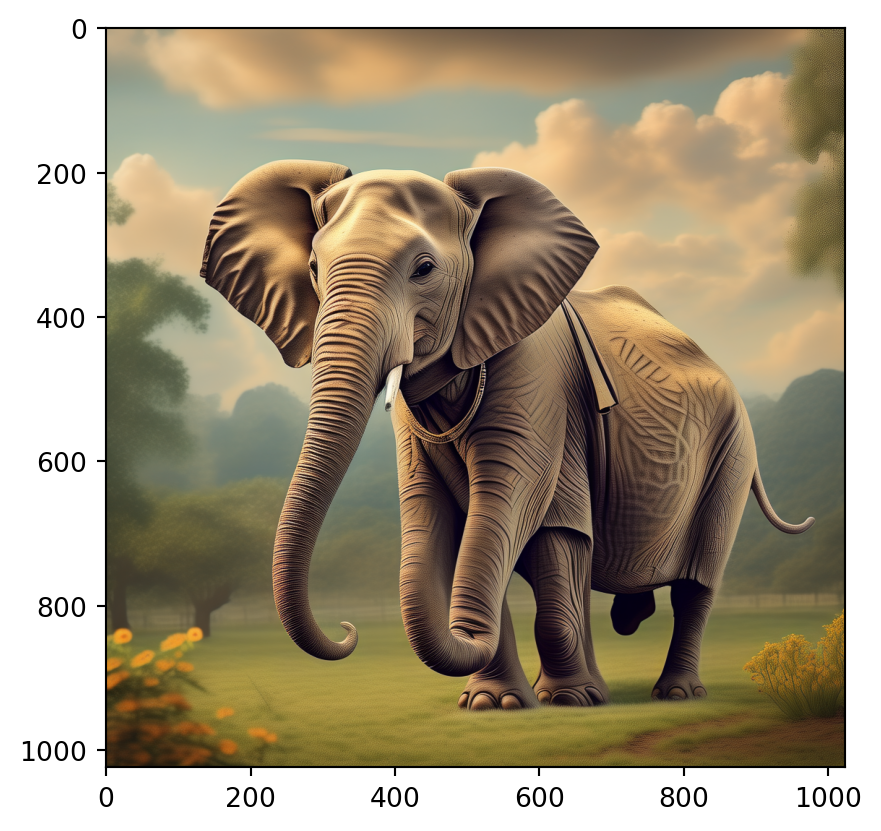

from pprint import pprint13 阿里云百炼
阿里云的大模型服务平台百炼是一站式的大模型开发及应用构建平台。不论是开发者还是业务人员，都能深入参与大模型应用的设计和构建。您可以通过简单的界面操作，在 5 分钟内开发出一款大模型应用，或在几小时内训练出一个专属模型，从而将更多精力专注于应用创新。
13.1 百炼模型
百炼提供了丰富多样的模型选择，它集成了通义系列大模型和第三方大模型，涵盖文本、图像、音视频等不同模态。
参见：https://help.aliyun.com/zh/model-studio/getting-started/models?
13.1.1 语言模型
您可以使用 OpenAI Python SDK、DashScope SDK 或 HTTP 接口调用通义千问模型。
13.1.1.1 使用 DashScope SDK
使用 DashScope SDK 时，会自动读取环境变量中的 API_KEY 并创建对象。
# Refer to the document for workspace information: https://help.aliyun.com/document_detail/2746874.html
from http import HTTPStatus
import dashscope
messages = [{'role': 'user', 'content': '你是谁'}]
response = dashscope.Generation.call("qwen-turbo",
messages=messages,
result_format='message', # set the result to be "message" format.
stream=False, # set streaming output
)
pprint(response.output.choices[0].message.content, width = 72)'我是阿里云开发的一款超大规模语言模型，我叫通义千问。作为一个AI助手，我的目标是帮助用户获得准确、有用的信息，解决他们的问题和困惑。无论是关于技术、教育、生活常识还是其他领域的问题，我都会尽我所能提供合适的帮助。如果您有任何想要了解的内容，欢迎随时向我提问！'13.1.1.2 使用 OpenAI SDK
from openai import OpenAI
import os
# 创建 client
client = OpenAI(
api_key=os.getenv("DASHSCOPE_API_KEY"), # 如果您没有配置环境变量，请在此处用您的API Key进行替换
base_url="https://dashscope.aliyuncs.com/compatible-mode/v1", # 填写DashScope服务的base_url
)
# 生成对话
completion = client.chat.completions.create(
model="qwen-turbo",
messages=[
{'role': 'system', 'content': 'You are a helpful assistant.'},
{'role': 'user', 'content': '你是谁？'}],
temperature=0.8,
top_p=0.8
)
print(completion.choices[0].message.content)我是阿里云开发的一款超大规模语言模型，我叫通义千问。13.1.2 视觉推理
Qwen-VL(qwen-vl-plus/qwen-vl-max) 模型现有几大特点：
- 大幅增强了图片中文字处理能力，能够成为生产力小帮手，提取、整理、总结文字信息不在话下。
- 增加可处理分辨率范围，各分辨率和长宽比的图都能处理，大图和长图能看清。
- 增强视觉推理和决策能力，适于搭建视觉Agent，让大模型Agent的想象力进一步扩展。
- 升级看图做题能力，拍一拍习题图发给Qwen-VL，大模型能帮用户一步步解题。

from http import HTTPStatus
import dashscope
def simple_multimodal_conversation_call():
"""Simple single round multimodal conversation call.
"""
messages = [
{
"role": "user",
"content": [
{"image": "https://dashscope.oss-cn-beijing.aliyuncs.com/images/dog_and_girl.jpeg"},
{"text": "这是什么?"}
]
}
]
response = dashscope.MultiModalConversation.call(model='qwen-vl-plus',
messages=messages)
# The response status_code is HTTPStatus.OK indicate success,
# otherwise indicate request is failed, you can get error code
# and message from code and message.
if response.status_code == HTTPStatus.OK:
return(response)
else:
print(response.code) # The error code.
print(response.message) # The error message.
response = simple_multimodal_conversation_call()
content = response.output.choices[0]['message']['content'][0]['text']
pprint(content, width = 72)('这张图片显示了一位女士和一只狗在海滩上。她们似乎正在互动，可能是在玩耍或训练中握手。背景是美丽的日落景色，海浪轻轻拍打着海岸线。\n'
'\n'
'这位女士穿着格子衬衫，并且戴着一个手镯。她坐在沙滩上与她的宠物进行着愉快的交流。这只狗看起来很友好并且对主人非常忠诚。整个场景充满了和谐、快乐以及人与动物之间的深厚情感联系。这是一个温馨的画面，让人感受到大自然的美好和平静。')13.1.3 文生图
通义万相-文本生成图像是基于自研的Composer组合生成框架的AI绘画创作大模型，能够根据用户输入的文字内容，生成符合语义描述的多样化风格的图像。通过知识重组与可变维度扩散模型，加速收敛并提升最终生成图片的效果，布局自然、细节丰富、画面细腻、结果逼真。AI深度理解中英文文本语义，让文字秒变精致AI画作。
当前模型支持的风格包括但不限于：
- 水彩、油画、中国画、素描、扁平插画、二次元、3D卡通。
- 支持中英文双语输入。
- 支持客户自定义咒语书/修饰词，可生成不同风格、不同主题、不同派别的图片，满足个性创意的AI图片生成需求。
- 支持输入参考图片进行参考内容或者参考风格迁移，支持更丰富的风格、主题和派别，AI作画质量更加高保真。
from http import HTTPStatus
from urllib.parse import urlparse, unquote
from pathlib import PurePosixPath
import requests
from dashscope import ImageSynthesis
def simple_call(prompt = 'Mouse rides elephant', out_dir = "output"):
rsp = ImageSynthesis.call(model=ImageSynthesis.Models.wanx_v1,
prompt=prompt,
n=1,
size='1024*1024')
if rsp.status_code == HTTPStatus.OK:
print(rsp.output)
print(rsp.usage)
# save file to current directory
files = []
for result in rsp.output.results:
file_name = PurePosixPath(unquote(urlparse(result.url).path)).parts[-1]
file = './%s/%s' % (out_dir, file_name)
with open(file, 'wb+') as f:
f.write(requests.get(result.url).content)
files.append(file)
return(files)
else:
print('Failed, status_code: %s, code: %s, message: %s' %
(rsp.status_code, rsp.code, rsp.message))
image_path = simple_call()from PIL import Image
import matplotlib.pyplot as plt
# 读取所有图片文件
image_path = "output/435e0b57-6884-4e32-9187-2ada667b0ecb-1.png"
image = Image.open(image_path)
plt.imshow(image)
13.1.4 语音识别
SenseVoice 语音识别大模型专注于高精度多语言语音识别、情感辨识和音频事件检测，支持超过 50 种语言的识别，整体效果优于 Whisper 模型，中文与粤语识别准确率相对提升在 50% 以上。
# For prerequisites running the following sample, visit https://help.aliyun.com/document_detail/611472.html
import json
from urllib import request
from http import HTTPStatus
import dashscope
task_response = dashscope.audio.asr.Transcription.async_call(
model='sensevoice-v1',
file_urls=[
'https://dashscope.oss-cn-beijing.aliyuncs.com/samples/audio/sensevoice/rich_text_example_1.wav'],
language_hints=['en'],)
transcription_response = dashscope.audio.asr.Transcription.wait(
task=task_response.output.task_id)
if transcription_response.status_code == HTTPStatus.OK:
for transcription in transcription_response.output['results']:
url = transcription['transcription_url']
result = json.loads(request.urlopen(url).read().decode('utf8'))
pprint(json.dumps(result, indent=4, ensure_ascii=False))
print('transcription done!')
else:
print('Error: ', transcription_response.output.message)('{\n'
' "file_url": '
'"https://dashscope.oss-cn-beijing.aliyuncs.com/samples/audio/sensevoice/rich_text_example_1.wav",\n'
' "properties": {\n'
' "audio_format": "pcm_s16le",\n'
' "channels": [\n'
' 0\n'
' ],\n'
' "original_sampling_rate": 16000,\n'
' "original_duration_in_milliseconds": 17645\n'
' },\n'
' "transcripts": [\n'
' {\n'
' "channel_id": 0,\n'
' "content_duration_in_milliseconds": 13240,\n'
' "text": "<|Speech|> Senior staff, Principal Doris Jackson, '
'Wakefield faculty, and of course, my fellow classmates. <|/Speech|> '
'<|ANGRY|><|Applause|> <|Speech|> I am honored <|/Applause|> to have been '
'chosen to speak before my classmates, as well as the students across America '
'today. <|/Speech|>",\n'
' "sentences": [\n'
' {\n'
' "begin_time": 0,\n'
' "end_time": 7480,\n'
' "text": "<|Speech|> Senior staff, Principal Doris '
'Jackson, Wakefield faculty, and of course, my fellow classmates. <|/Speech|> '
'<|ANGRY|>"\n'
' },\n'
' {\n'
' "begin_time": 11880,\n'
' "end_time": 17640,\n'
' "text": "<|Applause|> <|Speech|> I am honored '
'<|/Applause|> to have been chosen to speak before my classmates, as well as '
'the students across America today. <|/Speech|>"\n'
' }\n'
' ]\n'
' }\n'
' ]\n'
'}')
transcription done!13.1.5 语音合成
Sambert 语音合成 API 基于达摩院改良的自回归韵律模型，支持文本至语音的实时流式合成。
import sys
import dashscope
from dashscope.audio.tts import SpeechSynthesizer
result = SpeechSynthesizer.call(model='sambert-zhichu-v1',
text='今天天气怎么样',
sample_rate=48000)
tts_output = "output/weather.wav"
if result.get_audio_data() is not None:
with open(tts_output, 'wb') as f:
f.write(result.get_audio_data())
print('SUCCESS: get audio data: %dbytes in output.wav' %
(sys.getsizeof(result.get_audio_data())))
else:
print('ERROR: response is %s' % (result.get_response()))SUCCESS: get audio data: 135677bytes in output.wav使用 IPython.display 模块的 Audio 类来显示音频文件。
from IPython.display import Audio
from IPython.core.display import HTML
def html_tag_audio(file, file_type='wav'):
file_type = file_type.lower()
if file_type not in ['wav', 'mp3', 'ogg']:
raise ValueError("Invalid audio type. Supported types: 'wav', 'mp3', 'ogg'.")
audio_tag = f'''
<audio controls>
<source src="{file}" type="audio/{file_type}">
Your browser does not support the audio element.
</audio>
'''
return HTML(audio_tag)
# Example usage
tts_output = "output/weather.wav"
html_tag_audio(tts_output, file_type="wav")13.2 文档解析
Qwen-Long 是在通义千问针对超长上下文处理场景的大语言模型，支持中文、英文等不同语言输入，支持最长 1000 万 tokens(约 1500 万字或 1.5 万页文档)的超长上下文对话。配合同步上线的文档服务，可支持 word、pdf、markdown、epub、mobi 等多种文档格式的解析和对话。
13.2.1 上传文档
from pathlib import Path
from openai import OpenAI
client = OpenAI(
api_key=os.getenv("DASHSCOPE_API_KEY"), # 如果您没有配置环境变量，请在此处用您的API Key进行替换
base_url="https://dashscope.aliyuncs.com/compatible-mode/v1", # 填写DashScope服务的base_url
)
file_object = client.files.create(file=Path("example/Kraken2.pdf"),
purpose="file-extract")
print(f"文件上传成功，文件ID: {file_object.id}")文件上传成功，文件ID: file-fe-FegrQSGslKgnjoM3hz9BylgC13.2.2 查询文件
查询、删除文件。
# 查询文件元信息
client.files.retrieve(file_object.id)
# 查询文件列表
client.files.list()SyncPage[FileObject](data=[FileObject(id='file-fe-FegrQSGslKgnjoM3hz9BylgC', bytes=123750, created_at=1726562370, filename='Kraken2.pdf', object='file', purpose='file-extract', status='processed', status_details=None), FileObject(id='file-fe-d0surOfpU9ck8YP9grzxyeSU', bytes=1460, created_at=1726559802, filename='syncom-group-library.md', object='file', purpose='file-extract', status='processed', status_details=None), FileObject(id='file-fe-U8DwGdPB6Txo7cIo90MPAjlU', bytes=1006, created_at=1726559791, filename='gaoch-cv.md', object='file', purpose='file-extract', status='processed', status_details=None), FileObject(id='file-fe-iAiDxfZ6l09nmaNKNOjnYdCX', bytes=123750, created_at=1726557247, filename='Kraken2.pdf', object='file', purpose='file-extract', status='processed', status_details=None), FileObject(id='file-fe-5q4ob5AoPyEQA9vnQAIBaXIU', bytes=123750, created_at=1726556558, filename='Kraken2.pdf', object='file', purpose='file-extract', status='processed', status_details=None), FileObject(id='file-fe-LZaGRINYblYiXxAhJaHhBMZz', bytes=6416, created_at=1726556278, filename='安装Kraken2.md', object='file', purpose='file-extract', status='processed', status_details=None)], object='list', has_more=False)# 删除文件
client.files.delete(file_object.id)13.2.3 基于文档的对话
Qwen-Long 支持长文本（文档）对话，文档内容需放在 role 为 system 的 message 中，有以下两种方式可将文档信息输入给模型：
- 在提前上传文档获取文档 ID（
fileid）后，可以直接提供fileid。支持在对话中使用一个或多个fileid。 - 直接输入需要处理的文本格式的文档内容（file content）。
from pprint import pprint
# 获取文件内容
# 新文档上传后需要等待模型解析，首轮响应时间可能较长
completion = client.chat.completions.create(
model="qwen-long",
messages=[
{
'role': 'system',
'content': 'You are a helpful assistant.'
},
{
'role': 'system',
'content': f'fileid://{file_object.id}'
},
{
'role': 'user',
'content': '这篇文章讲了什么？'
}
],
stream=False
)
pprint(completion.choices[0].message.model_dump(), width = 72){'content': '这篇文章介绍了几种常用的利用宏基因组reads进行物种注释的工具，包括Kraken2、MetaPhlAn和Centrifuge，分别描述了它们的工作原理、优缺点、使用的数据库以及输出结果。此外，文章还详细说明了如何在个人电脑上使用Kraken2进行物种注释分析，包括安装Kraken2、下载数据库、运行Kraken2进行分类注释及分析结果的具体步骤，并给出了一个使用R语言对Kraken2输出结果进行可视化的示例。',
'function_call': None,
'refusal': None,
'role': 'assistant',
'tool_calls': None}13.2.4 多个文档
当有多个文档时，可以将多个 fileid 传递给 content。
# 首次对话会等待文档解析完成，首轮响应时间可能较长
completion = client.chat.completions.create(
model="qwen-long",
messages=[
{
'role': 'system',
'content': 'You are a helpful assistant.'
},
{
'role': 'system',
'content': f"fileid://{file_1.id},fileid://{file_2.id}"
},
{
'role': 'user',
'content': '这几篇文章讲了什么？'
}
],
stream=False
)13.2.5 追加文档
使用下面的方法，可以在对话过程中追加文档。
# data_1.pdf为原文档，data_2.pdf为追加文档
file_1 = client.files.create(file=Path("example/gaoch-cv.md"),
purpose="file-extract")
# 初始化messages列表
messages = [
{
'role': 'system',
'content': 'You are a helpful assistant.'
},
{
'role': 'system',
'content': f'fileid://{file_1.id}'
},
{
'role': 'user',
'content': '这篇文章讲了什么？'
},
]
# 第一轮响应
completion = client.chat.completions.create(
model="qwen-long",
messages=messages,
stream=False
)
# 打印出第一轮响应
print(f"第一轮响应：{completion.choices[0].message.model_dump()}")第一轮响应：{'content': '这篇文章是关于高春辉的个人简介。高春辉是一位微生物学博士，目前在华中农业大学资源与环境学院担任副研究员和硕士生导师。文章介绍了他的教育背景、研究领域、科研项目、学术成果以及他在学术界的影响力。', 'refusal': None, 'role': 'assistant', 'function_call': None, 'tool_calls': None}将第一轮响应的内容添加到历史记录中。
# 构造assistant_message
assistant_message = {
"role": "assistant",
"content": completion.choices[0].message.content}
# 将assistant_message添加到messages中
messages.append(assistant_message)上传一个新文档。
# 获取追加文档的fileid
file_2 = client.files.create(file=Path("example/syncom-group-library.md"),
purpose="file-extract")
# 将追加文档的fileid添加到messages中
system_message = {
'role': 'system',
'content': f'fileid://{file_2.id}'
}
messages.append(system_message)
# 添加用户问题
messages.append({
'role': 'user',
'content': '这两篇文章的内容有什么异同点？'
})
# 追加文档后的响应
completion = client.chat.completions.create(
model="qwen-long",
messages=messages,
stream=False
)
print(f"追加文档后的响应：{completion.choices[0].message.model_dump()}")追加文档后的响应：{'content': '这两篇文章的主要相同点在于它们都与教育和科学研究相关，并且都涉及到了微生物学这个领域。\n\n不同之处在于：\n\n1. 第一篇文章"高春辉个人简介"主要是介绍高春辉个人的职业生涯、研究成果以及他的专业领域。这是一篇关于个人的传记式文章。\n\n2. 而第二篇文章"土壤生物膜与环境健康书屋源起"则是在讲述一个特定的图书馆或者说是书屋的建立原因和它的运作规则。这篇文章的重点在于提供给学生和研究人员获取知识的途径，以及对土壤微生物学的研究的重要性。', 'refusal': None, 'role': 'assistant', 'function_call': None, 'tool_calls': None}